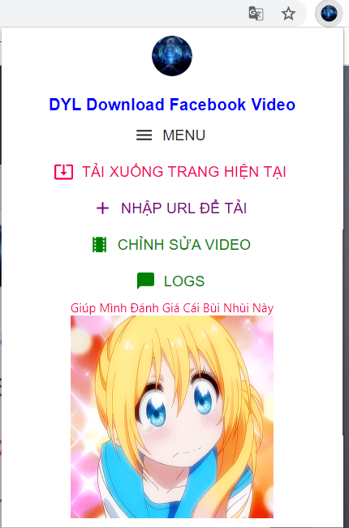
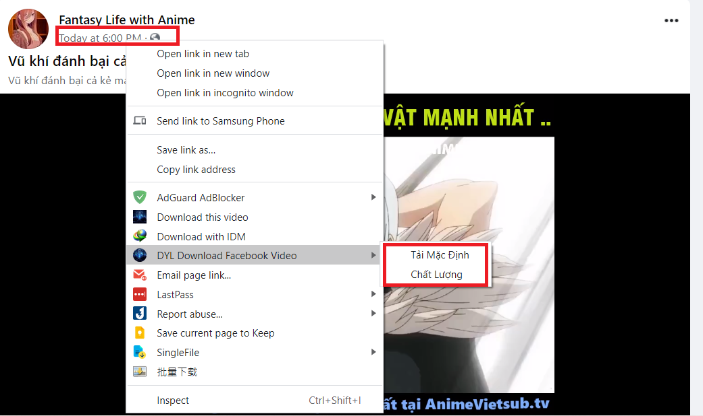
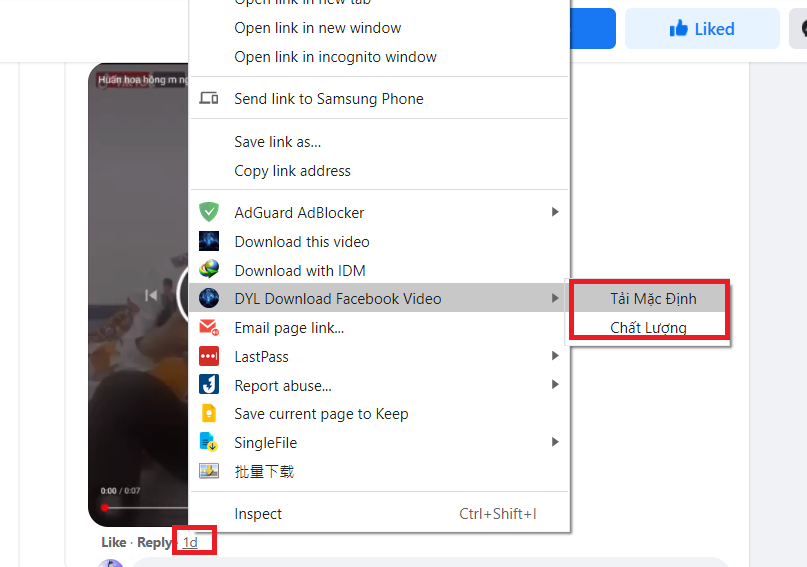
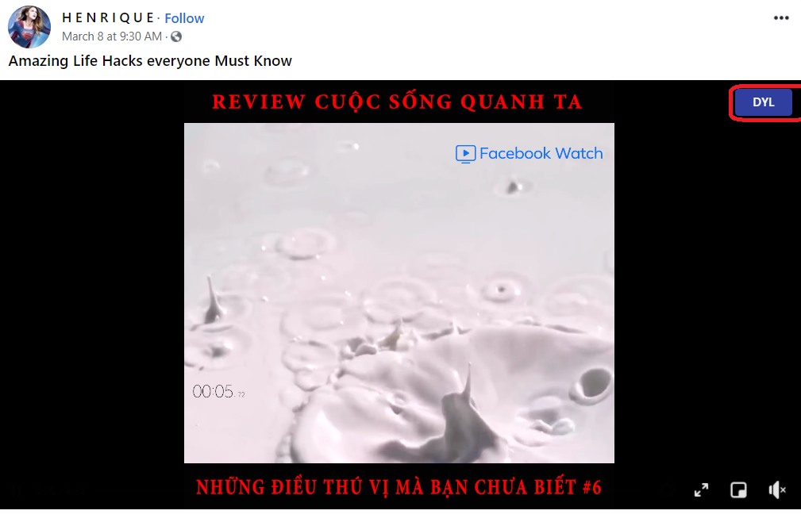
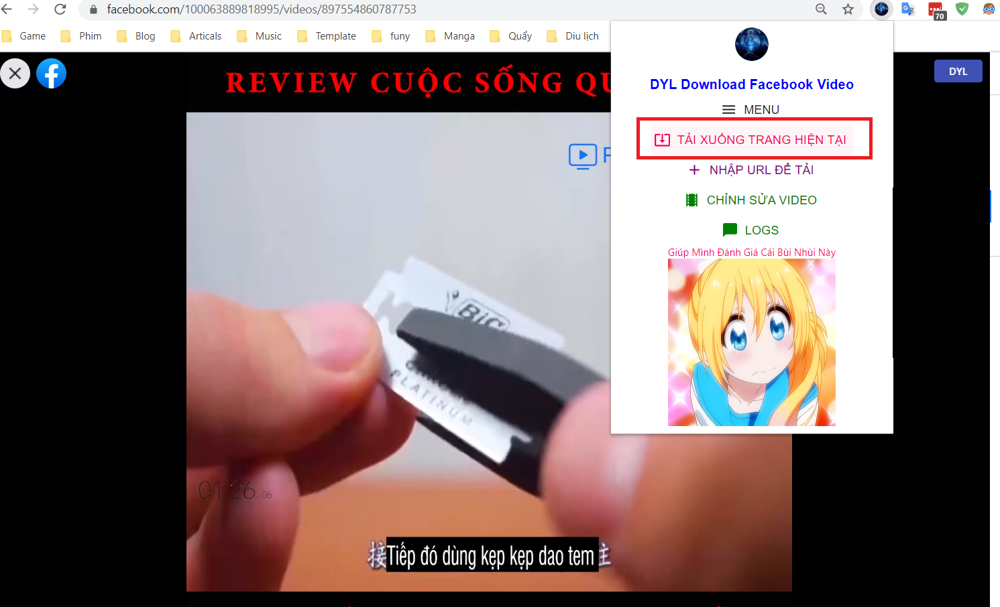
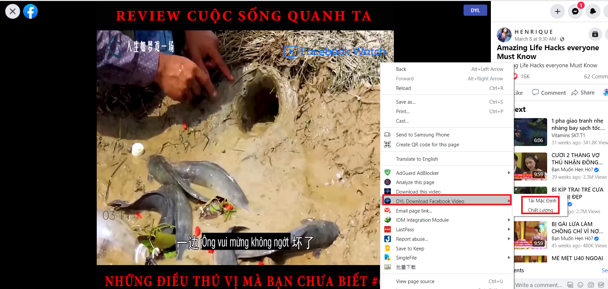
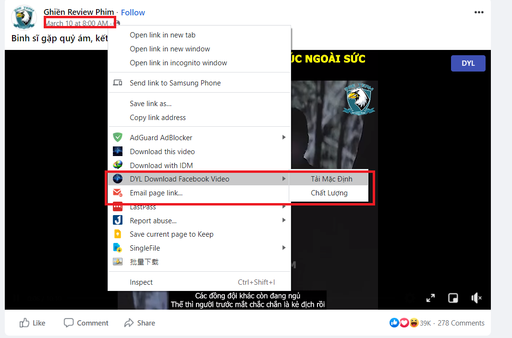
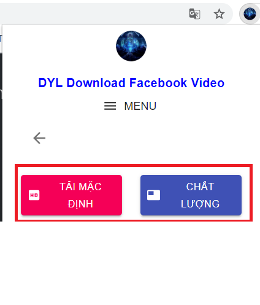
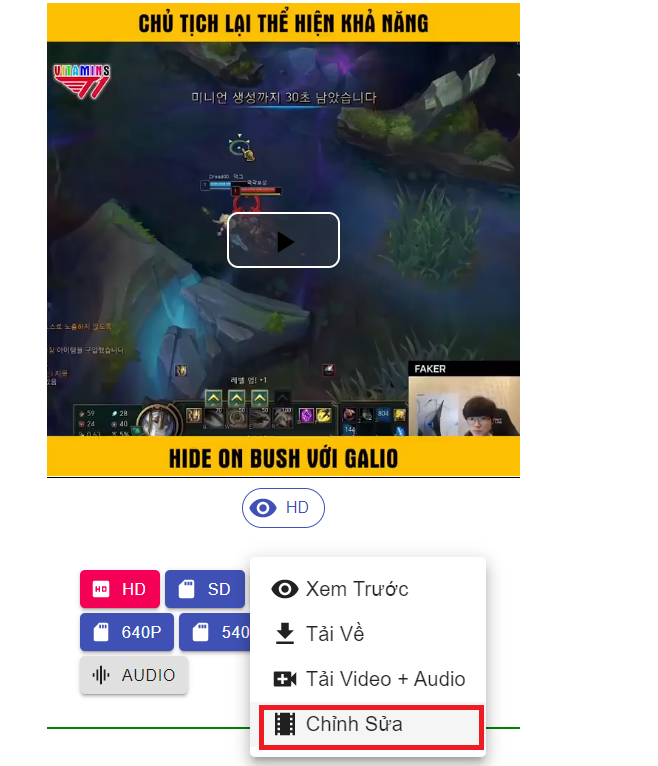

Về Tiện Ích

- Đây là tiện ích mở rộng
giúp bạn tải video từ Facebook với nhiều chất lượng khác nhau (bao gồm cả HD)
và âm thanh, bạn có thể tải tất cả các video từ:
+ Video từ
URL cụ thể
+ Nhóm Facebook (bao gồm nhóm riêng
tư)
+ Trang video
+ Video phần bình
luận
+ Video trên watch
+ Video profile
cá nhân (Từ người dùng khác hoặc bạn)
- Bạn có
thể chỉnh sửa video đơn giản như tắt âm thanh, cắt video dễ dàng trước
khi tải xuống
- Tải về tại đây
- Xem hướng dẫn sử dụng tại đây
- Giúp mình báo cáo lỗi bạn
gặp tại đây
Hướng Dẫn
Hướng Dẫn Cách Sử Dụng
- Có 3 cách tải:
+ Nhấp vào extension icon
bên phải.

+ Nhấp chuột phải vào thời gian của một
post hay comment và chọn Tải Video


+ Bấm vào button hiện trên mỗi
video(độ chính xác khoảng tầm 85%)

- Bạn có thể tải video theo URL, để tải
video dựa trên trang hiện tại bạn bấm vào popup của extension rồi chọn Tải
Xuống Trang
Hiện Tại hoặc chuột phải chọn Tải Video.


- Tuy nhiên để
có thể tải video
một cách chính xác, bạn hãy nhấp chuột phải vào thời gian của
bài post hoặc comment bao gồm video đó và nhập chuột phải chọn Tải
Video từ Menu hoặc nhấp vào liên kết đó, nó sẽ đưa bạn tới
bài post hoặc video và chọn Tải trang Hiện Tại từ popup
hoặc
Tải Video từ chuột phải của menu
- Hiện tại button hiển thị có thể
sẽ không chính xác và khá khó chịu, bạn có thể tắt
button bằng cách nhấp vào nó và chọn Hide hoặc mở popup chọn phần
cài đặt để tắt chức năng này. Mình khuyến nghị nên nhấp chọn thời gian
của post hoặc comment để tải video thay vì dựa vào button quá nhiều.

- Đó là 3 cách tải, giờ
tới phương thức tải, có 2 phương thức tải:
+ Tải mặc định
+ Chất lượng video

- Tải mặc định sẽ chọn
video chất lượng cao nhất bao gồm âm thanh, một vài video thỉnh thoảng sử dụng
cách tải này chất lượng không được tốt, lúc đó bạn hãy chọn
tải bằng Chất lượng video.
- Chất lượng video giúp bạn chọn video
và âm thanh với chất lượng khác nhau, tuy nhiên đối với video không
có nhãn HD hay SD thì sẽ không có tiếng, tuy nhiên bạn
có thể chọn 'Tải Video + Audio' để tiến hành ghép video
và âm thanh lại với nhau, bạn cũng có thể cắt video tuỳ thích bằng
cách chọn 'Chỉnh sửa'.

- Tải về tại đây
- Tìm hiểu thêm tại đây
- Giúp mình báo cáo lỗi bạn
gặp tại đây